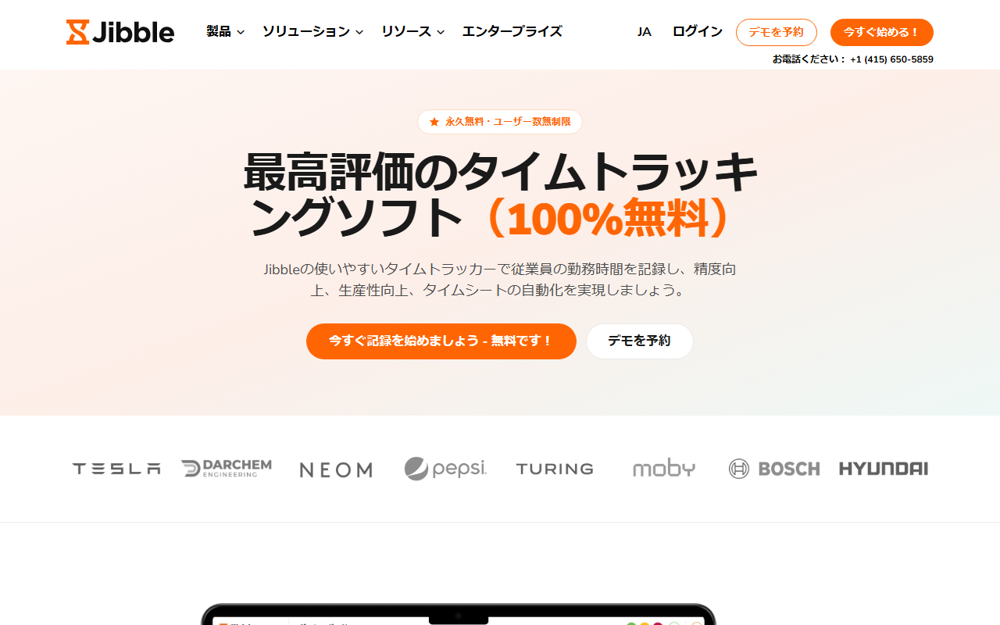
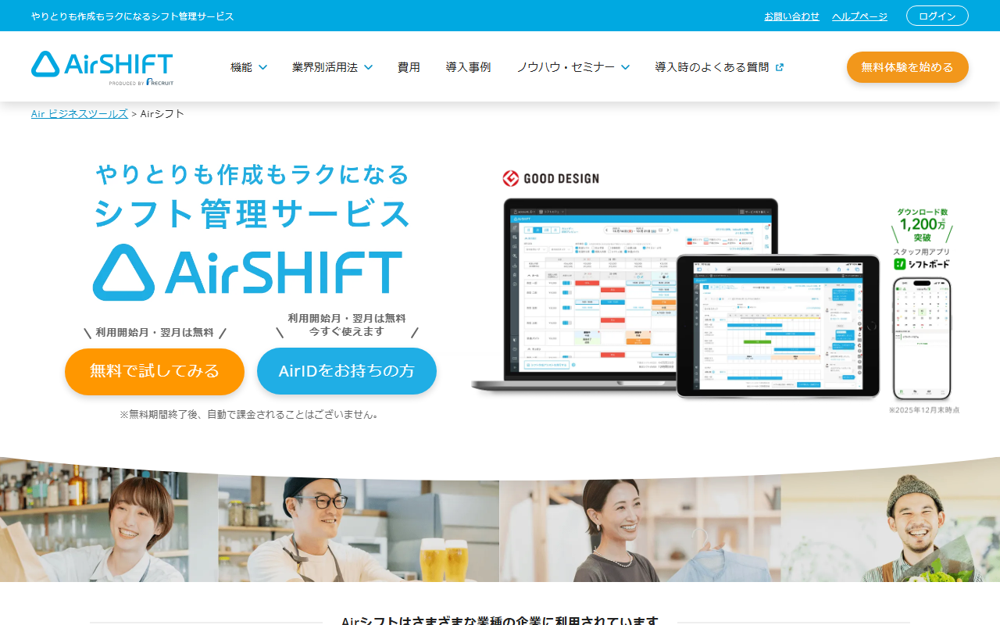
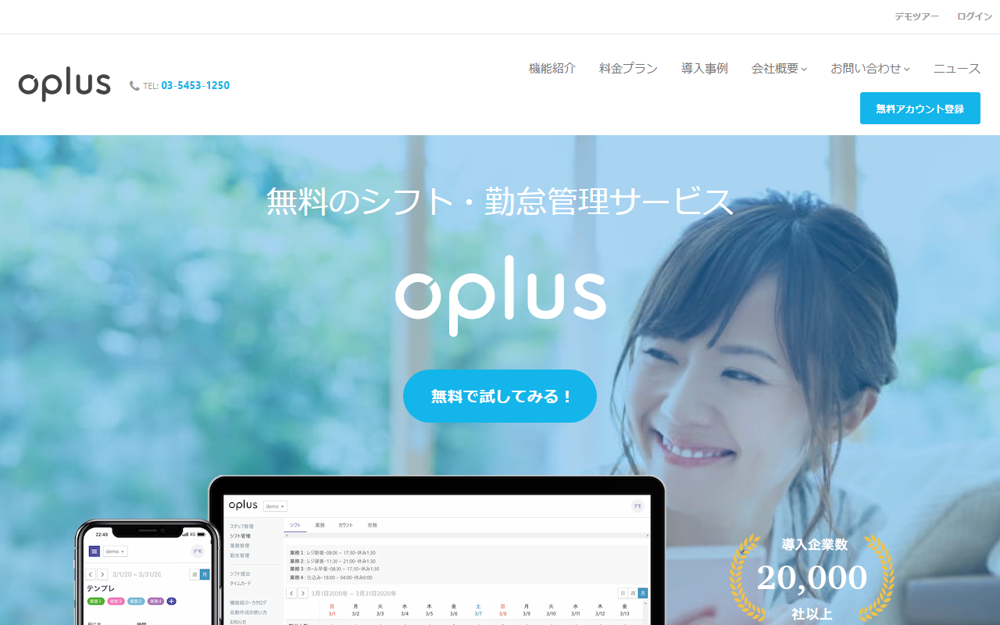

シフト管理アプリのおすすめは？無料・日本語対応のJibbleを選ぶ基準
シフト管理アプリは、スタッフの希望を集めて勤務表を作り、出退勤も記録するサービスです。自分の予定だけを管理する個人用アプリとは、目的が違います。
この記事では、Jibble・Airシフト・oplusの料金と無料枠を比べます。シフト作成と打刻、日本語対応の違いも取り上げます。
シフト管理アプリ3製品の料金と無料枠を早見
- Jibble：Freeは無料／人数無制限
- Jibble：打刻・タイムシートも無料
- Airシフト：月330円/人／体験2か月
- Airシフト：最低月990円
- oplus：100人まで無料／Pro月100円/人
- oplus勤怠：月200円/人
迷ったら、ユーザー数無制限のFreeで打刻を試せるJibbleがおすすめです。Webとモバイルの画面は、日本語にも対応しています。
永久無料・ユーザー数無制限の案内と、日本語の製品概要を見られます。
個人用と管理者用のシフト管理アプリは目的が違う
個人用は自分の予定を把握するもの、管理者用は複数人の勤務予定と実績を扱うものです。 同じ「シフト管理」でも、誰が導入するかによって必要な機能や料金の考え方が変わります。

自分の勤務予定を管理したい人
アルバイトやパートとして働く人に必要なのは、自分の出勤日が分かるカレンダーです。掛け持ちの場合は、複数の勤務先の予定や給料の見込みもまとめて管理したくなります。
使うのは基本的に本人です。他のスタッフの出退勤を承認したり、店舗全体の勤務実績を締めたりする必要はありません。
この目的なら、組織を作成してスタッフを招待する勤怠管理サービスは重すぎることがあります。個人用アプリでは、入力の手間・掛け持ちへの対応・通知の有無・データの保存方法を見比べましょう。
店舗やチームのシフト・勤怠を管理したい人
店長や管理者は、スタッフの希望を集めて勤務予定を作り、確定後は全員へ共有します。勤務開始後は実際の出退勤を記録し、月末に勤務実績を給与計算へ渡せる形に整えます。遅刻・早退・休憩・残業も記録します。
比較するときは「予定」と「実績」を分けて考えます。シフト作成に強い製品が、打刻やタイムシートまで備えるとは限りません。
この製品の中心は、打刻とタイムシートです。固定・フレックス・週単位フレックスの勤務予定を作り、複数の予定にメンバーを割り当てられます。希望回収や欠員調整、条件付き自動作成の対応範囲は明記されていません。
シフト管理アプリを比べる4つのポイント
製品数を増やすより、毎週のシフト作成で困っている作業を同じ基準で比べるほうが選びやすくなります。 「シフト管理 アプリ 比較」で候補を探すときは、次の4点を順番に見てください。役割の違う製品を同列に扱わずに済みます。
3製品の大まかな違いは次のとおりです。
- Jibble：打刻とタイムシートが中心。Freeはユーザー数無制限
- Airシフト：希望シフトの収集・調整・共有とタイムカードを一体化
- oplus：100ユーザーまでの無料枠で希望提出・管理・確定に対応。自動作成と勤怠は別料金の機能
希望回収・シフト作成・共有のどこまで必要か
最初に、今もっとも時間がかかっている作業を洗い出します。希望日の回収・勤務表の作成・確定後の連絡は、それぞれ別の機能です。
作成を支援する機能と、条件に基づいて自動で組む機能は別です。Jibbleは複数の勤務予定を作成し、メンバーへ公開します。希望回収や欠員調整、必要人数を考慮した自動作成の範囲は公式情報から分かりません。
一方、スタッフ用アプリで集めた勤務希望と休み希望は、Airシフトのシフト表へ反映されます。調整後の内容は、そのままスタッフへ共有されます。
oplusも希望の提出・管理・確定に対応しています。有料オプションでは、必要人数・出勤日数の均等化・勤務間隔を条件にした自動作成が可能です。希望の転記をなくしたいなら、Airシフトが候補になります。条件に沿った割り当てまで任せるなら、oplusもJibbleと並べて検討します。
打刻・タイムシート・給与連携まで一体化できるか
勤務予定を作った後の実績管理までまとめるなら、打刻方法と集計の流れを見ます。FreeではWebとモバイルから打刻でき、タイムシートも管理対象です。GPS・顔認証・レポート出力も含まれます。
店舗の端末だけで打刻するのか、外出先や複数拠点からも記録するのかを決めると、必要な機能を絞れます。
給与計算との連携先は、Xero・QuickBooks Online・Deelです。CSV／XLSによる出力とAPIも用意されています。日本の給与ソフトとの直接連携は案内されていません。
出退勤・休憩の打刻と労働時間の集計まで扱い、freee人事労務へデータを渡せるのがAirシフトです。oplusでは、打刻と勤怠管理が「Pro＋勤怠」プランの対象です。
無料枠だけで打刻まで試すならJibbleが合います。国内給与ソフトと直接つなぎたい場合はAirシフトを見ます。シフトの自動作成と勤怠を一つの製品で広げるなら、oplusが向きます。
無料プランの人数・機能・期間に制限があるか
無料サービスには、期限なしのプランと人数・機能に制限のあるプランがあります。一定期間だけ全機能を試せるものはトライアルです。混同すると、試用後に必要な機能を使えず、有料契約が必要になる場合もあります。
Freeは永久無料で、ユーザー数に上限がありません。登録時には、有料機能を試せる14日間の無料トライアルが始まります。終了後は有料契約へ移るか、Freeを続けるかを選べます。公式ページ間で有料プラン名が一致していないため、トライアル対象の名称は断定できません。
oplusのスタンダードプランは100ユーザーまで無料ですが、打刻・勤怠管理と自動シフト作成は無料枠に含まれません。利用開始月と翌月が無料のAirシフトは、終了後に自動で課金される仕組みではありません。
期限なしで打刻まで使うならJibble、希望提出と確定を無料で始めるならoplusです。国内店舗向けの一連の操作を契約前に試したい職場には、Airシフトが向きます。
日本語UI・サポート・法令対応を確認できるか
「日本語対応」は範囲を分けて見ます。管理画面と従業員画面に加え、ヘルプの言語も重要です。問い合わせに日本語で答えてもらえるか、日本の勤怠制度に合わせられるかも別に見ましょう。
Web版・iOS／Android版・macOS／Windows版は日本語に対応し、日本語ヘルプセンターもあります。ただし、有人窓口が日本語で回答するかは案内されていません。
休憩・残業・休暇を管理する機能はあります。36協定に合わせた設定が欠かせない職場では、契約前に対応範囲を問い合わせてください。
国内向けのAirシフトとoplusは、どちらも日本語で提供されています。電話とメールの相談窓口があるため、Airシフトは日本語の有人支援を重視する職場に向きます。oplusには無料デモがあり、自動作成で扱いたい条件を導入前に相談できます。
Jibbleが少人数のシフト・勤怠管理に向く理由

画面には「永久無料・ユーザー数無制限」と表示されています。無料登録の案内も日本語です。
Freeで打刻と勤怠実績の管理を試したい職場には、Jibbleが向いています。 高度なシフト作成よりも、出退勤の記録と集計を優先する職場向けです。
Freeはユーザー数無制限で基本的な打刻に対応する
Freeは永久無料で、ユーザー数に上限がありません。Webとモバイルから打刻でき、タイムシートも管理対象です。GPS・顔認証・レポート出力もFreeに含まれます。
スタッフが増えても、無料枠の人数上限には達しません。少人数の店舗なら、必要な機能がそろうかを試してから継続を決められます。
現場外から打刻する職場では、GPSが比較項目になります。本人確認を重視するなら顔認証、締め作業で記録を残すならレポート出力も見てください。設定方法やFreeでの細かな制限は、自社の打刻ルールに沿って試しましょう。
Web・モバイル・デスクトップで日本語を選べる
Web・iOS／Android・macOS／Windowsは、いずれも日本語に対応しています。管理者の画面だけが日本語でも、従業員の打刻画面が分かりにくければ定着しません。複数端末が日本語に対応するため、導入時の説明も減らせます。
一方、Chrome拡張機能の日本語は近日提供予定です。まだ日本語化されていないため、利用する職場は英語表示でも支障がないかを先に見ておきましょう。
有料プランの価格は申込画面で確認が必要
JibbleにはFreeと有料プランがあり、支払いは月払いか年払いです。公式ページによって有料プラン名が異なるため、価格は日本向けの申込画面で判断してください。まずFreeと14日間のトライアルを使い、有料機能が本当に必要かを見極めましょう。
Freeで使える打刻方法やタイムシートなど、勤怠管理機能の全体像を見られます。
Jibble・Airシフト・oplusが向く職場
3製品は、無料で使える機能と得意な作業が異なります。現場で最も時間がかかっている作業に合わせて選びます。
Jibbleを候補にしやすい事業者
Jibbleは、まず出退勤の記録と勤怠実績を一つにまとめたい事業者に向きます。Webやスマートフォンで打刻し、タイムシートとレポートにまとめる流れをユーザー数無制限のFreeで試せます。
モバイル・Web・デスクトップはいずれも日本語対応で、GPSと顔認証もFreeに含まれます。管理者が日本語ヘルプを読みながら設定したい職場にも向いています。
Jibbleが向く条件は、次のとおりです。
- スタッフ数に応じた無料上限を気にせず始めたい
- シフト予定だけでなく、打刻とタイムシートも同じサービスで扱いたい
- Webとモバイルの日本語UIが必要
- まずFreeで毎日の打刻を試し、有料機能の要否を後から決めたい
Airシフトは希望回収から共有までまとめたい店舗向け

利用開始月と翌月が無料と表示され、PC・タブレット・スマホの画面も紹介されています。
スタッフ用アプリで勤務希望と休み希望を集め、シフト表に反映します。調整後の内容を共有し、タイムカードも同じサービスで管理。freee人事労務へのデータ連携も案内されています。
料金は、連携スタッフ1人あたり月額330円。スタッフ2人以下でも最低月額990円がかかります。利用開始月と翌月は無料で、終了後の自動課金はありません。
無料体験の条件と、希望提出からシフト共有までの機能を日本語で見られます。
oplusは希望提出を無料で始めたい職場向け

「無料のシフト・勤怠管理サービス」と明記され、無料登録の入口が表示されています。
oplusのスタンダードプランは、100ユーザーまで無料です。希望シフトの提出・管理・確定に加え、アプリやCSV・カレンダーへの出力も含まれます。
Proは1人あたり月額100円です。打刻と勤怠管理を含むPro＋勤怠は月額200円。必要人数や勤務間隔を踏まえた自動作成は、月額300円のオプションです。
無料プランの対象機能と、有料の勤怠管理・自動作成の違いが分かります。
導入前に確認したい支払い・請求書・解約条件
Freeから有料へ移る前に、決済手段・請求書の発行方法・解約の時期・返金条件を見ておきましょう。 海外SaaSでは、日本語画面があっても日本の請求実務と同じとは限りません。
日本から使える支払い方法と請求書
月払いは、主要クレジットカードとPayPalに対応しています。ただし、JCBや日本発行カードを使えるかは案内されていません。
50人を超えるチームには、年払いの銀行振込に関する問い合わせ窓口があります。少人数の月払いは、カードかPayPalが前提です。決済画面で、通貨と利用可能ブランドを確かめてください。
有料契約では、課金後に請求書が自動発行されます。OrganizationのSubscriptionにあるbilling infoでVAT番号を登録すると、請求書にも反映されます。
請求書のダウンロード手順は案内されておらず、日本のインボイス登録番号についても同様です。消費税を含む税務上の扱いは、必要に応じて税理士に確認してください。
Freeへの変更・解約・返金の扱い
有料プランからFreeへ戻す入口は、Webアプリの「Organization Settings」にあります。「Subscriptions」「Manage plan」の順に進み、Freeを選んでください。解約も同じ管理画面から自分で操作できます。
解約は即時に有効となり、その時点で有料機能へアクセスできません。月払い・年払いはいずれも前払いで、自動更新されます。解約時も返金や未使用期間のクレジットはないため、先に必要なデータを保存してください。
組織内の全員が使い続けられるFreeへの変更と、組織やアカウントの削除は別の操作です。アカウントを削除すると、データは即時に消えて復元できません。費用を止めたいだけなら、まずFreeへの変更で足りるかを考え、アカウント削除は組織そのものを消す場合だけ選びましょう。
日本語の製品ページから無料登録へ進み、有料契約へ切り替える前の機能差を見られます。
シフト管理アプリについてよくある質問
人数だけでなく、必要な機能から選びましょう。
無料のシフト管理アプリだけで運用できる？
希望回収から集計までのうち、必要な機能が無料枠に収まる場合に限られます。向き不向きは、希望回収や自動作成が必要かどうかで決まります。国内制度への対応や給与連携を別の方法で補えるかも基準になります。
Jibbleは日本語で使える？
Web・iOS／Android・macOS／Windowsは日本語に対応し、日本語ヘルプセンターもあります。Chrome拡張機能の日本語は近日提供予定です。有人窓口の回答言語も明記されていません。使う端末と問い合わせ方法を分けて見てください。
シフト作成と勤怠管理は同じ？
同じではありません。シフト作成は「誰がいつ働く予定か」を組む作業で、勤怠管理は「実際にいつ出退勤し、何時間働いたか」を記録・集計する作業です。
シフト表を作る負担だけを減らしたいのか、打刻と月末集計をまとめたいのかで選ぶ製品は変わります。打刻と月末集計をまとめたい職場では、Jibbleが候補です。
まとめ：無料・日本語対応だけでなく必要な業務範囲で選ぶ
シフトの高度な自動作成より、打刻と勤怠実績の集約を優先する事業者には、Jibbleが候補です。 希望回収から共有までを重視するならAirシフト、条件付きの自動作成を重視するならoplusを比較してください。
Jibbleが合うのは、次のような職場です。
- 無料枠のユーザー数より、打刻・集計機能の充足を重視する
- Webやモバイルから出退勤を記録し、タイムシートをまとめたい
- 日本語UIと日本語ヘルプを使い、自社で初期設定を進められる
別のサービスも比べたいのは、次のような職場です。
- 日本の給与ソフトとの連携や国内制度への対応が必須
- 複雑な条件を含むシフトの自動作成を主目的にする
- 日本語の有人支援、JCB、日本向け請求書の条件を契約前に確定したい
無料か有料かを決める前に、希望回収から打刻・集計までのうち必要な作業を書き出しましょう。Jibbleで足りない条件が分かれば、それが国内向けサービスを比べる基準になります。
日本語に対応する端末と、無料で使える打刻機能を見直してから登録できます。